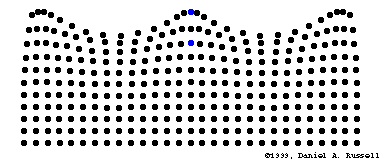
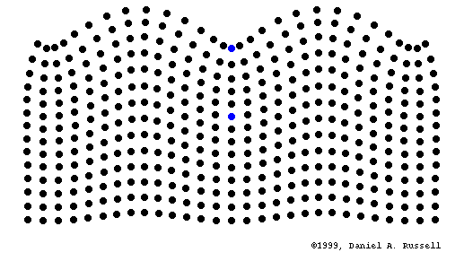

LOOK CLOSER / 觀察任務
核心觀念
波動，是擾動由一處傳向另一處的現象。波可以傳遞能量；在這些機械波的理想模型中，介質質點主要在平衡位置附近運動。
01 / WATER WAVES
水波
瀏覽器不支援 Canvas，請使用較新的瀏覽器。
動畫時間 s
播放速度只改變觀看速度。動畫的空間、時間與位移比例經調整，不代表真實比例。
WHY IT WORKS / 理解原理
想一想
給老師：模型假設與延伸說明
對照你提供的水波動畫


保留原動畫的署名；上述播放控制只控制本頁互動模型，不控制這兩個 GIF。
探索 01 / 06
帶走一個觀念
「看起來在前進」
不代表「每個點都在前進」。
水、空氣、彈簧和岩石有各自的振動方式；
電磁波與重力波則不需要物質介質來傳播。
下一階段的學習
這個分頁已建立入口，互動教材尚未製作。目前可完整使用「波的介紹」中的六組實驗。
資料來源與動畫製作說明
互動模型使用 HTML Canvas 自行繪製。定性概念參考以下教育與研究機構；各模型的近似條件列於實驗內。
兩個參考 GIF 由使用者提供，原圖署名為 Daniel A. Russell；其權利歸原作者。本網站自行繪製的模型與參考 GIF 分開呈現。